Zdjęcia
Co jest w każdym miejscu na trasie
Zdjęcia wszystkich miejsc z wersji T, w kolejności, w jakiej je odwiedzamy. Każde zdjęcie ma podpis, autora, licencję i link do źródła. Kliknij zdjęcie, żeby otworzyć stronę źródłową.
Dzień po dniu
Kliknij nazwę miejsca, żeby przejść do jego zdjęć.
| Data | Miejsce | Kto |
|---|---|---|
| 16.12 | Warszawa → Monachium → Szanghaj | my dwoje |
| 17.12 | Kanton (Guangzhou North)Guangzhou | my dwoje |
| 18.12 | ChaozhouChaozhou | my dwoje |
| 19.12 | ShantouShantou | my dwoje |
| 20.12 | Okolice ChaozhouDaoyun Lou (Raoping) | my dwoje |
| 21.12 | Okolice ChaozhouChaozhou | my dwoje |
| 22.12 | Chaozhou → HongkongHongkong (Kowloon, Victoria Harbour) | my dwoje + Kamil |
| 23.12 | HongkongHongkong (Kowloon, Victoria Harbour) | my + Kamil |
| 24.12 | Hongkong → ShenzhenShenzhen | my + Kamil |
| 25.12 | Shenzhen / DapengPółwysep Dapeng (Shenzhen) | my + Kamil |
| 26.12 | Shenzhen → ZhuhaiShenzhen · Zhuhai (Gongbei, Qi'ao) | my + Kamil, wieczorem ekipa |
| 27.12 | ZhuhaiZhuhai (Gongbei, Qi'ao) | wszyscy |
| 28.12 | MakauMakau | wszyscy |
| 29.12 | Zhuhai → YangshuoYangshuo i rzeka Yulong | wszyscy |
| 30.12 | YangshuoYangshuo i rzeka Yulong | wszyscy |
| 31.12 | Yangshuo (Sylwester)Yangshuo i rzeka Yulong | wszyscy |
| 1.01 | XingpingXingping i rzeka Li | wszyscy |
| 2.01 | Yangshuo → ZhaoqingYangshuo i rzeka Yulong · Zhaoqing (Seven Star Crags, Dinghu) | wszyscy |
| 3.01 | Zhaoqing / DinghuZhaoqing (Seven Star Crags, Dinghu) | wszyscy |
| 4.01 | Zhaoqing → KantonGuangzhou | wszyscy |
| 5.01 | Kanton / FoshanFoshan / Shunde · Guangzhou | wszyscy |
| 6.01 | Powrót / KantonGuangzhou | my + Kamil wylot, ekipa zostaje |
| 7.01 | Kanton → HongkongHongkong (Kowloon, Victoria Harbour) | ekipa |
| 8.01 | HongkongHongkong (Kowloon, Victoria Harbour) | ekipa |
| 9.01 | Hongkong → SzanghajSzanghaj (tylko ekipa) | ekipa |
| 10.01 | SzanghajSzanghaj (tylko ekipa) | ekipa |
| 11.01 | Powrót ekipy | ekipa |
miasto
Guangzhou
Wielka metropolia i baza wypadowa. Najciekawsze są starsze dzielnice: wyspa Shamian z kolonialnymi willami, Liwan / Yongqingfang z kamienicami Xiguan i herbaciarnie dim sum. Wieczorem iluminacja Canton Tower nad Rzeką Perłową.

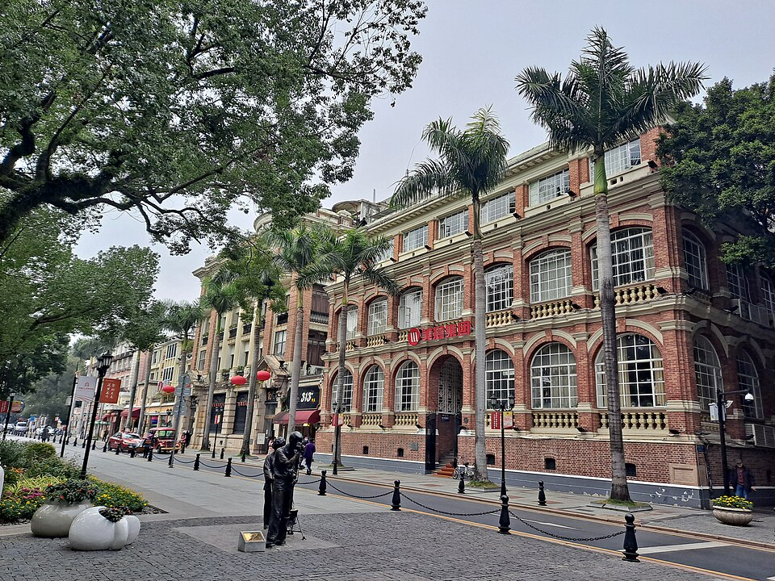

Więcej zdjęć z innych źródeł (10)
Zdjęcia z serwisów podróżniczych, blogów i stron miast. Wyświetlają się prosto z serwerów tych stron (nie kopiujemy ich), a prawa należą do autorów. Kliknij zdjęcie, żeby otworzyć stronę źródłową. Tytuły pochodzą z wyszukiwarki i mogą być niedokładne.


Tych nie da się osadzić, więc otwórz je na stronie źródłowej:
- Sha Mian’s Colonial Charm trip.com
- Shamian Island Stroll gs.ctrip.com
- Shamian Island Promenade eguangzhou.gov.cn
- Shamian Ancient Tree Park Promenade gz.gov.cn
- Shamian Island’s Colonial Promenade hk.trip.com
- Shamian Promenade Bronze Statues hk.trip.com
- Spring Splendor in Guangzhou hk.trip.com
- Shamian Island Street Scene dp.pconline.com.cn
stare miasto
Chaozhou
Kameralne, dobrze zachowane stare miasto z ulicą bram pamiątkowych (Paifang Street), świątynią Kaiyuan i mostem Guangji na pontonach. Spacerowe, niskie, bardzo „chińskie” – plus herbata gongfu i kuchnia Chaoshan.
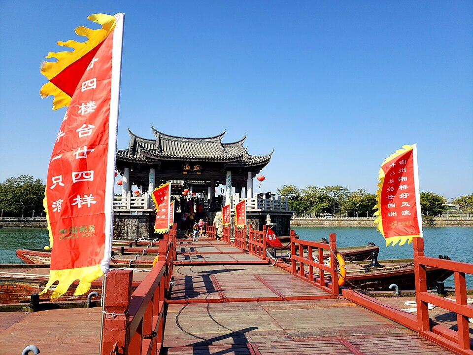
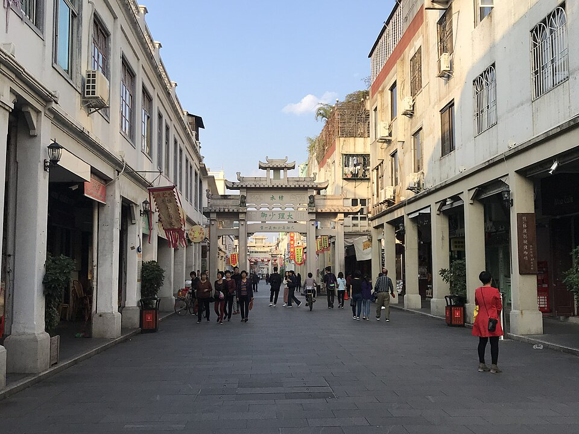


Więcej zdjęć z innych źródeł (10)
Zdjęcia z serwisów podróżniczych, blogów i stron miast. Wyświetlają się prosto z serwerów tych stron (nie kopiujemy ich), a prawa należą do autorów. Kliknij zdjęcie, żeby otworzyć stronę źródłową. Tytuły pochodzą z wyszukiwarki i mogą być niedokładne.


Tych nie da się osadzić, więc otwórz je na stronie źródłowej:
- Guangji Bridge Pavilions in Chaozhou us.trip.com
- Guangji Bridge in Chaozhou travel.qunar.com
- Guangji Bridge Floating Walkway au.trip.com
- Guangji Bridge in Chaozhou k.sina.cn
- Guangji Bridge in Chaozhou tkww.hk
- Guangji Bridge: Chaozhou’s Floating Pavilion Bridge k.sina.com.cn
- Historic Archway Street in Chaozhou you.ctrip.com
miasto
Shantou
Portowe miasto 25 minut od Chaozhou. Stare centrum (Xiaogongyuan) to podupadłe kamienice z arkadami z początku XX wieku. Jedziemy głównie na wieczorny wołowy hot pot Chaoshan.
.jpg)
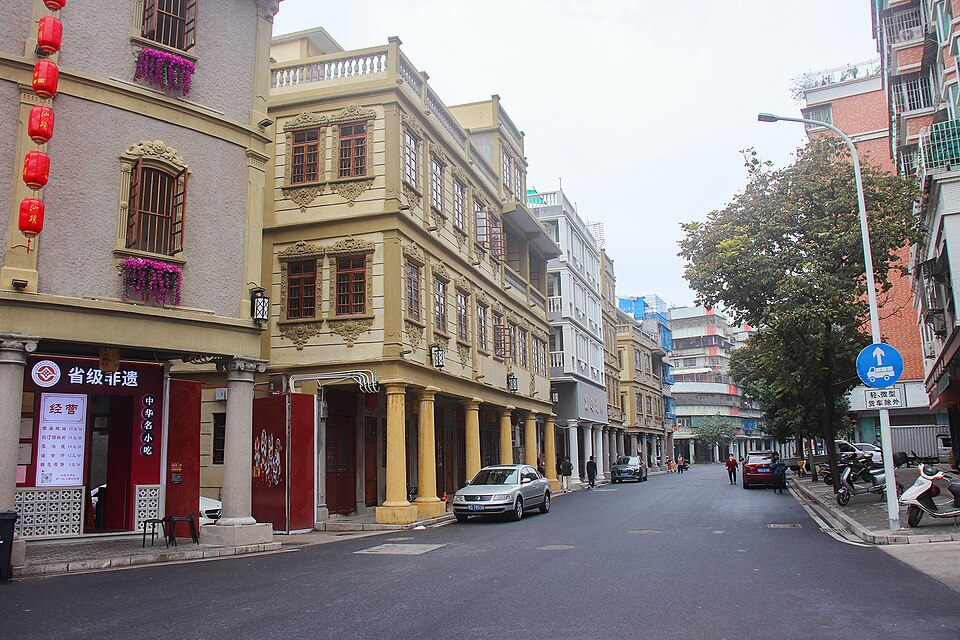
Więcej zdjęć z innych źródeł (10)
Zdjęcia z serwisów podróżniczych, blogów i stron miast. Wyświetlają się prosto z serwerów tych stron (nie kopiujemy ich), a prawa należą do autorów. Kliknij zdjęcie, żeby otworzyć stronę źródłową. Tytuły pochodzą z wyszukiwarki i mogą być niedokładne.


Tych nie da się osadzić, więc otwórz je na stronie źródłowej:
- Shantou Old Town Street Scene jp.trip.com
- Historic Lantern-Lined Street in Shantou tripadvisor.com
- Historic Arcade Street in Shantou news.dahe.cn
- Evening Stroll on Shantou’s Xiao Gongyuan Street in.trip.com
- Shantou Small Park Street Scene klook.com
wioska / dom Hakka
Daoyun Lou (Raoping)
Największy okrągły dom (tulou) w Guangdongu, ok. 1,5 h od Chaozhou. Ośmiokątny pierścień z setkami izb wokół wspólnego dziedzińca, wciąż zamieszkany.
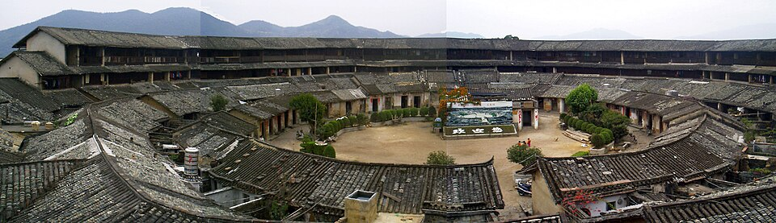
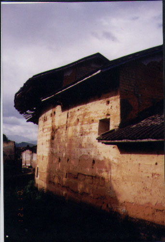
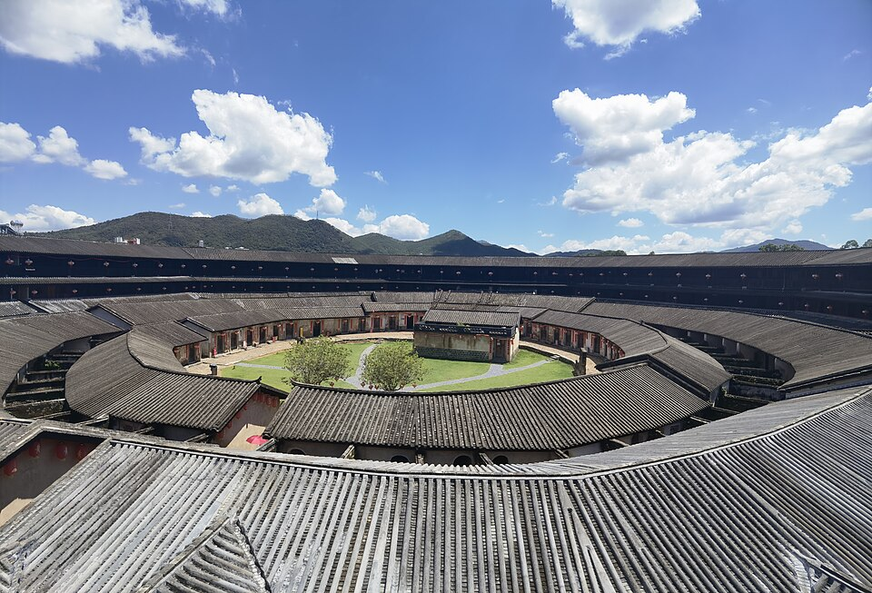
miasto
Hongkong (Kowloon, Victoria Harbour)
Klasyczny Hongkong: Star Ferry przez Victoria Harbour, Kowloon, Peak i panorama wyspy. My z Kamilem 22–24.12, ekipa 7–9.01.
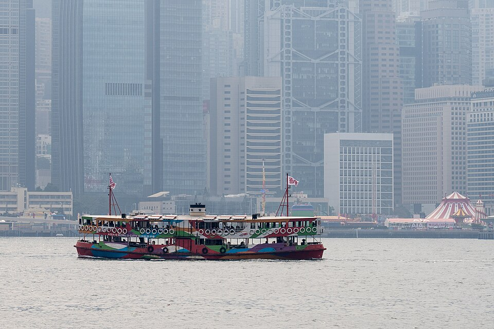

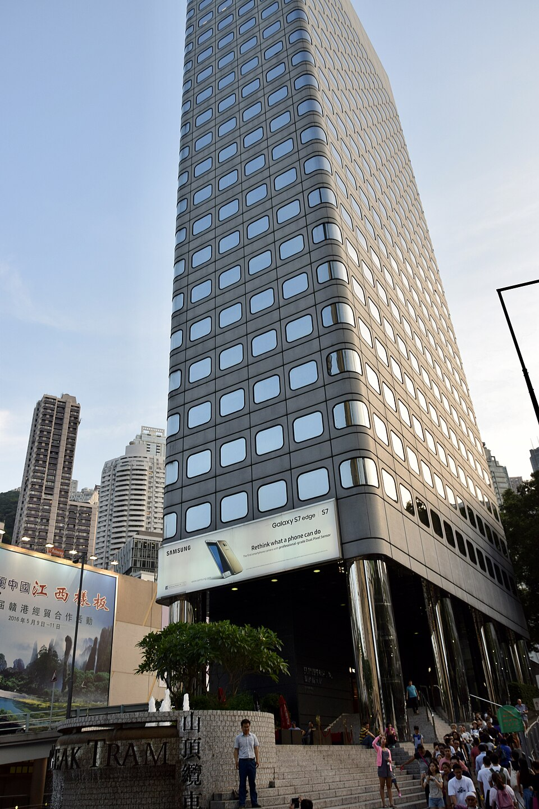
Więcej zdjęć z innych źródeł (10)
Zdjęcia z serwisów podróżniczych, blogów i stron miast. Wyświetlają się prosto z serwerów tych stron (nie kopiujemy ich), a prawa należą do autorów. Kliknij zdjęcie, żeby otworzyć stronę źródłową. Tytuły pochodzą z wyszukiwarki i mogą być niedokładne.


Tych nie da się osadzić, więc otwórz je na stronie źródłowej:
- Hong Kong Harbour View ejinsight.com
miasto
Shenzhen
Nowoczesne megamiasto: wieżowce Futian, elektroniczny bazar Huaqiangbei i promenada nad zatoką Shenzhen. Dwie noce 24–26.12, 25.12 wypad na Dapeng, 26.12 wieczorem prom do Zhuhai.
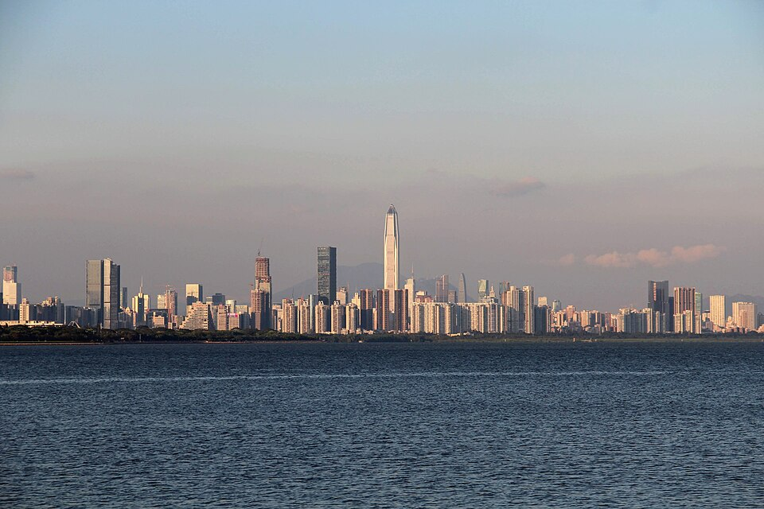
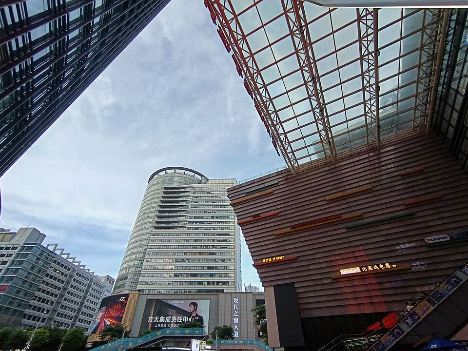

.jpg)

Więcej zdjęć z innych źródeł (10)
Zdjęcia z serwisów podróżniczych, blogów i stron miast. Wyświetlają się prosto z serwerów tych stron (nie kopiujemy ich), a prawa należą do autorów. Kliknij zdjęcie, żeby otworzyć stronę źródłową. Tytuły pochodzą z wyszukiwarki i mogą być niedokładne.


Tych nie da się osadzić, więc otwórz je na stronie źródłowej:
- Shenzhen Civic Center Skyline hss.cuhk.edu.cn
natura / wybrzeże
Półwysep Dapeng (Shenzhen)
Zielony, górzysty półwysep na wschód od Shenzhen, ok. 1,5 h od centrum. Szlak wybrzeżem Dongchong → Xichong prowadzi przez skały i zatoczki, kończy się na plaży Xichong. Po drodze stary fort Dapeng i wioski. W grudniu ok. 20°C, może wiać.

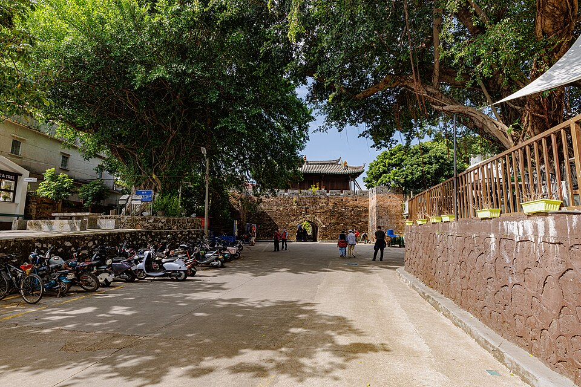
.jpg)
Więcej zdjęć z innych źródeł (10)
Zdjęcia z serwisów podróżniczych, blogów i stron miast. Wyświetlają się prosto z serwerów tych stron (nie kopiujemy ich), a prawa należą do autorów. Kliknij zdjęcie, żeby otworzyć stronę źródłową. Tytuły pochodzą z wyszukiwarki i mogą być niedokładne.


Tych nie da się osadzić, więc otwórz je na stronie źródłowej:
- Xichong Beach Aerial View dapeng-moonbay.com
- Dapeng Peninsula Beach Day gs.ctrip.com
miasto nad morzem
Zhuhai (Gongbei, Qi'ao)
Spokojne, zielone miasto nad morzem przy granicy z Makau. Promenada Lovers' Road, posąg Rybaczki, wyspa Qi'ao z namorzynami i starą wioską. Baza na 3 noce i pieszy wypad do Makau.

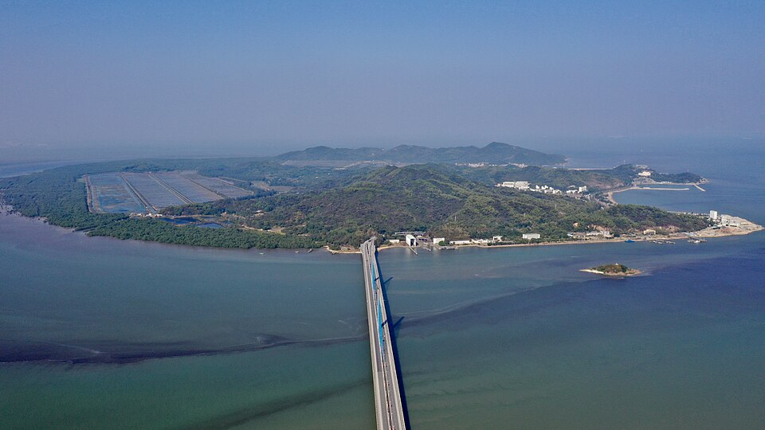
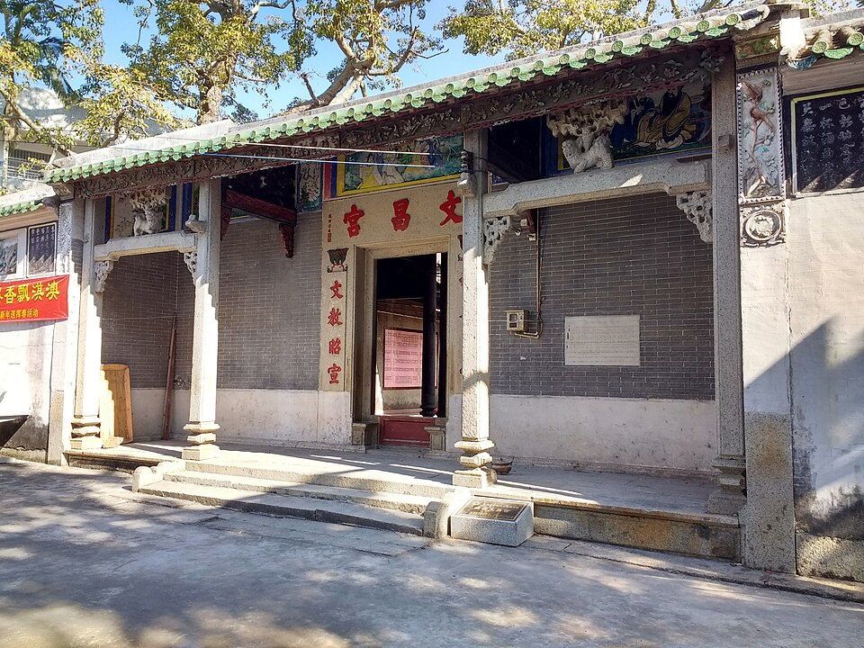
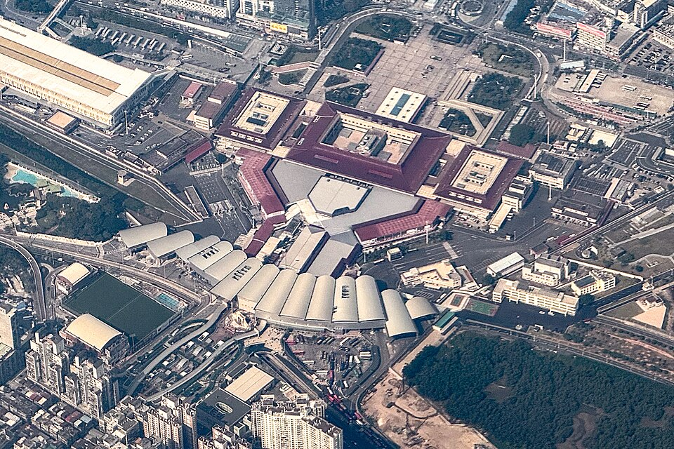
miasto
Makau
Wycieczka promem z Shekou na jeden dzień. Portugalskie stare centrum z ruinami katedry św. Pawła i placem Senado, spokojniejsza wioska Taipa i egg tarty.
_01.jpg)
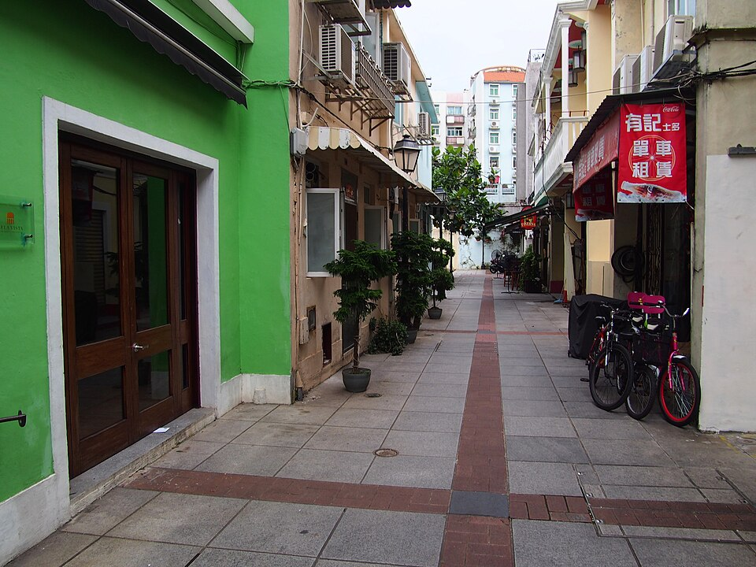
Więcej zdjęć z innych źródeł (10)
Zdjęcia z serwisów podróżniczych, blogów i stron miast. Wyświetlają się prosto z serwerów tych stron (nie kopiujemy ich), a prawa należą do autorów. Kliknij zdjęcie, żeby otworzyć stronę źródłową. Tytuły pochodzą z wyszukiwarki i mogą być niedokładne.


natura / wieś
Yangshuo i rzeka Yulong
Krasowe wzgórza, pola i wioski. Najlepiej zwiedzać na rowerze albo skuterze wzdłuż rzeki Yulong, w okolicy jest też Moon Hill (wzgórze z łukiem skalnym). 4 noce 29.12–2.01 z Sylwestrem. Pod koniec grudnia jest ok. 12–14°C w dzień i wilgotno.
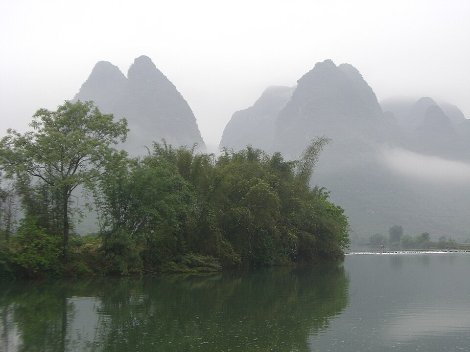
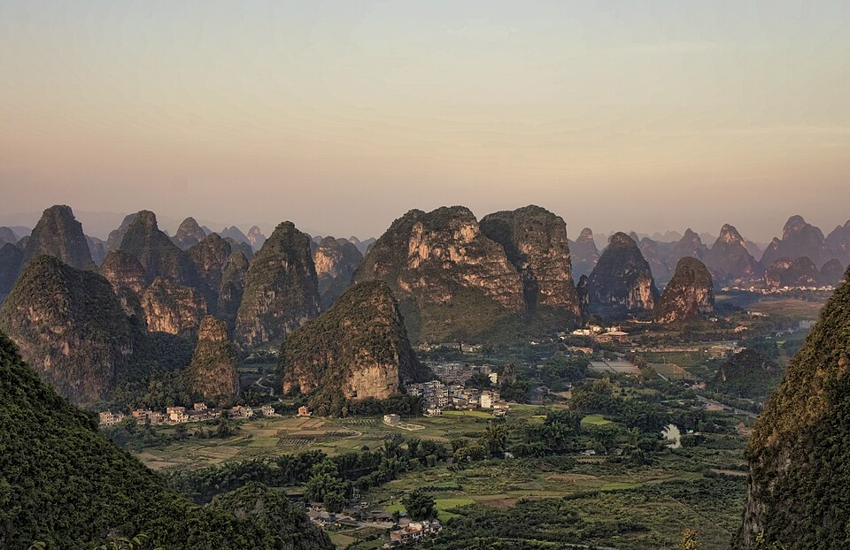


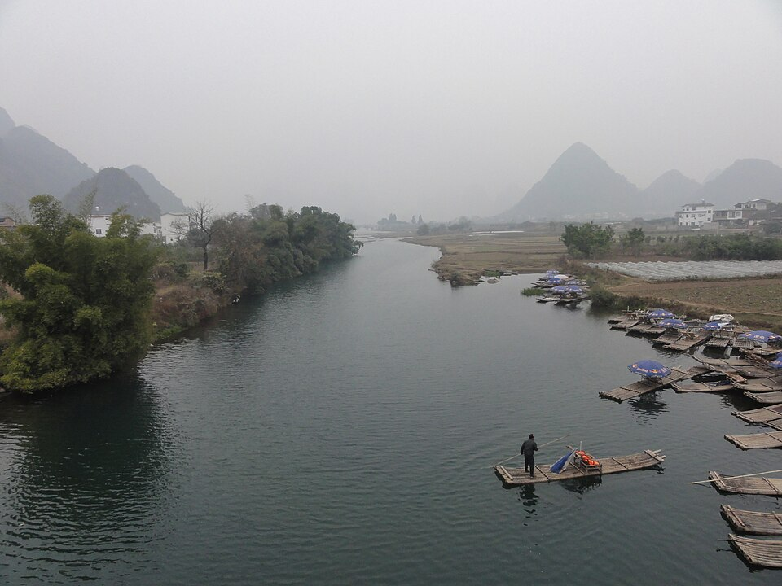
Więcej zdjęć z innych źródeł (10)
Zdjęcia z serwisów podróżniczych, blogów i stron miast. Wyświetlają się prosto z serwerów tych stron (nie kopiujemy ich), a prawa należą do autorów. Kliknij zdjęcie, żeby otworzyć stronę źródłową. Tytuły pochodzą z wyszukiwarki i mogą być niedokładne.


natura / wieś
Xingping i rzeka Li
Stara wioska nad rzeką Li z widokiem z banknotu 20 juanów, ok. 1 h od Yangshuo. Rejs bambusową tratwą albo szlak wzdłuż rzeki. Wypad 1.01 z Yangshuo.

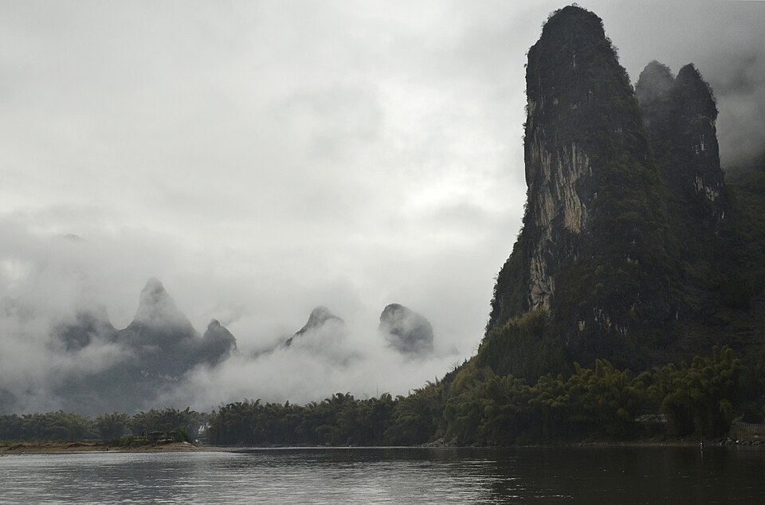
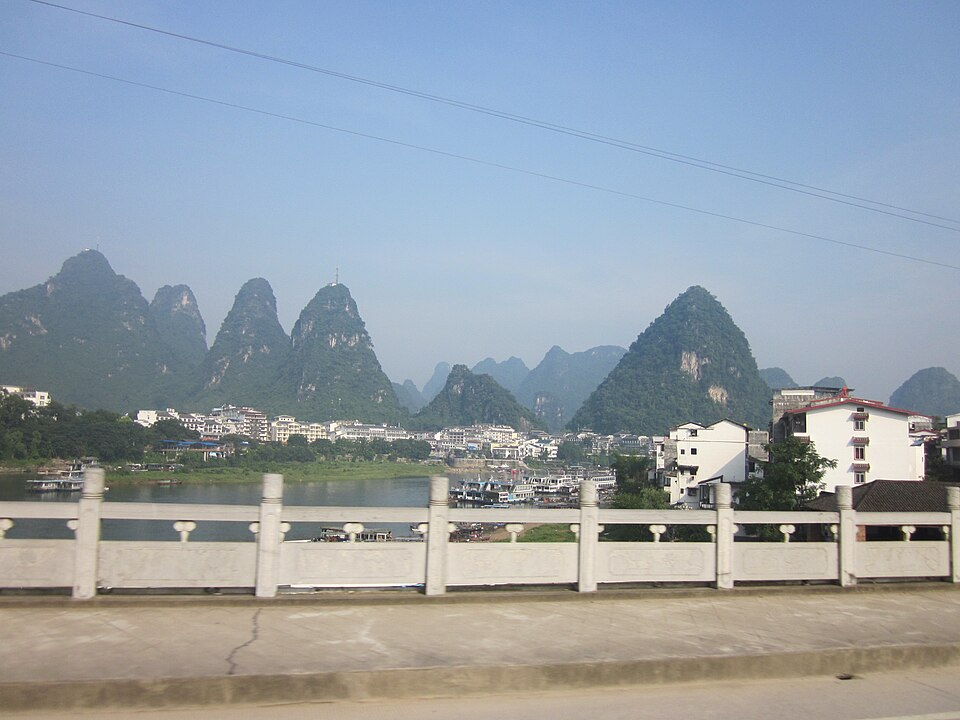
Więcej zdjęć z innych źródeł (10)
Zdjęcia z serwisów podróżniczych, blogów i stron miast. Wyświetlają się prosto z serwerów tych stron (nie kopiujemy ich), a prawa należą do autorów. Kliknij zdjęcie, żeby otworzyć stronę źródłową. Tytuły pochodzą z wyszukiwarki i mogą być niedokładne.


Tych nie da się osadzić, więc otwórz je na stronie źródłowej:
- Xingping Ancient Town by the Li River you.ctrip.com
- Xingping Ancient Town Riverside sohu.com
- Xingping Ancient Town Riverfront oct-cts.com
- Strolling Through Xingping Ancient Town k.sina.cn
- Xingping Ancient Town and Li River Karst Landscape getyourguide.com
- 20 Yuan Note Viewpoint in Xingping airial.travel
natura przy mieście
Zhaoqing (Seven Star Crags, Dinghu)
Wapienne skały nad jeziorami tuż przy mieście (Seven Star Crags) i góra Dinghu z lasem, wodospadami i klasztorem Qingyun. Spokojna baza na 2 noce po Yangshuo.

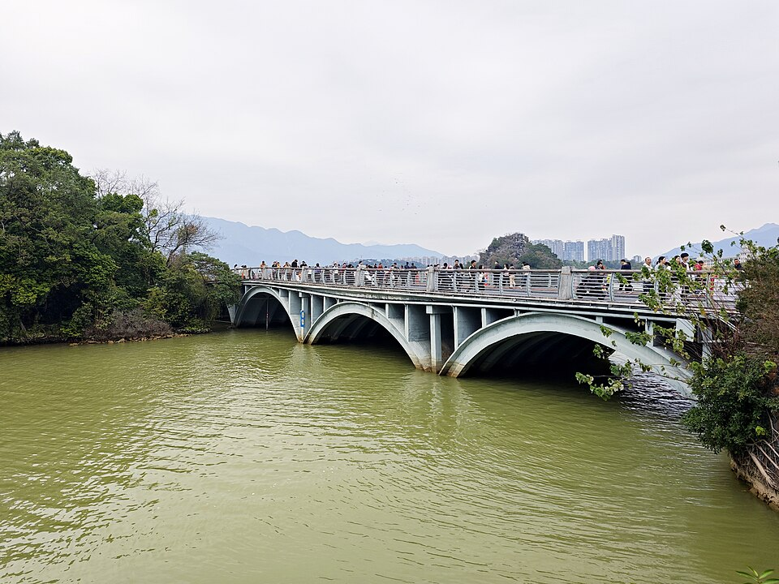

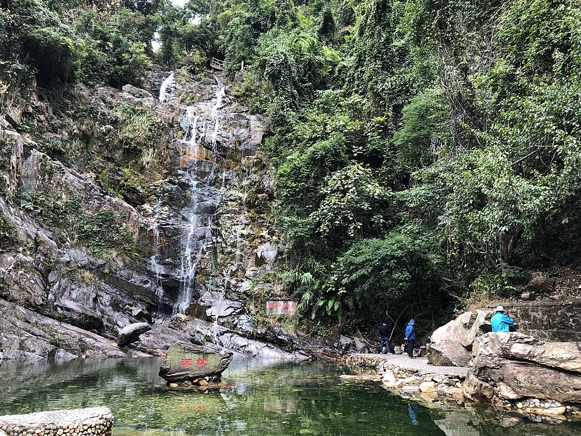
miasto
Foshan / Shunde
Sąsiad Guangzhou: świątynia Zumiao (kolebka kung-fu i opery kantońskiej) oraz ogród Qinghui w Shunde, mieście jedzenia. To spokojny ostatni dzień przed wylotem.

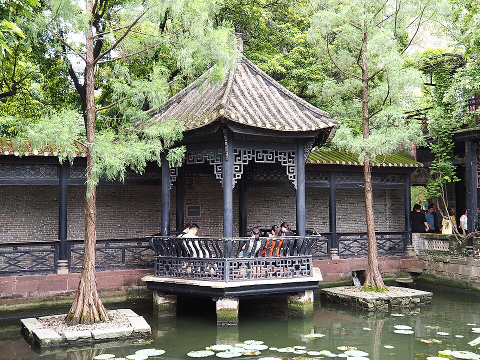
Więcej zdjęć z innych źródeł (10)
Zdjęcia z serwisów podróżniczych, blogów i stron miast. Wyświetlają się prosto z serwerów tych stron (nie kopiujemy ich), a prawa należą do autorów. Kliknij zdjęcie, żeby otworzyć stronę źródłową. Tytuły pochodzą z wyszukiwarki i mogą być niedokładne.

Tych nie da się osadzić, więc otwórz je na stronie źródłowej:
- Qinghui Garden’s Tranquil Water Path h5.ifeng.com
- Qinghui Garden Aerial Panorama feeds-drcn.cloud.huawei.com.cn
- Classical Garden Pavilion pelago.com
- Lantern-Lined Canal and Illuminated Bridge in Shunde hk.trip.com
- Changlu Tourism Leisure Expo Garden jp.trip.com
- Tranquil Lingnan Garden Pavilion cntourpal.com
- Shunde District Archway Entrance silkroadtravel.com
- Serene Lingnan Garden Pavilion trip.com
- Lingnan Tiandi Cultural Street klook.com
miasto
Szanghaj (tylko ekipa)
Końcówka dla ekipy (9–11.1): Bund, Pudong, stare uliczki. W styczniu jest zimno, ok. 8°C w dzień i ok. 2°C w nocy.

Więcej zdjęć z innych źródeł (10)
Zdjęcia z serwisów podróżniczych, blogów i stron miast. Wyświetlają się prosto z serwerów tych stron (nie kopiujemy ich), a prawa należą do autorów. Kliknij zdjęcie, żeby otworzyć stronę źródłową. Tytuły pochodzą z wyszukiwarki i mogą być niedokładne.


Tych nie da się osadzić, więc otwórz je na stronie źródłowej:
- Shanghai’s Nighttime Splendor ru.trip.com
- Shanghai: Modern Skyline and Historic Heritage ieee-pedg2023.org
Źródła i licencje
Wszystkie zdjęcia pochodzą z Wikimedia Commons (kopie w rozmiarze 960 px trzymamy w repo, żeby strona ładowała się niezawodnie). Autor i licencja (CC BY, CC BY-SA, CC0 lub domena publiczna) są podane pod każdym zdjęciem, a link prowadzi do strony pliku z pełnym opisem. Zdjęcia robiono w różnych porach roku, więc zimą (grudzień–styczeń) zieleń i woda mogą wyglądać skromniej, a niebo częściej jest szare.